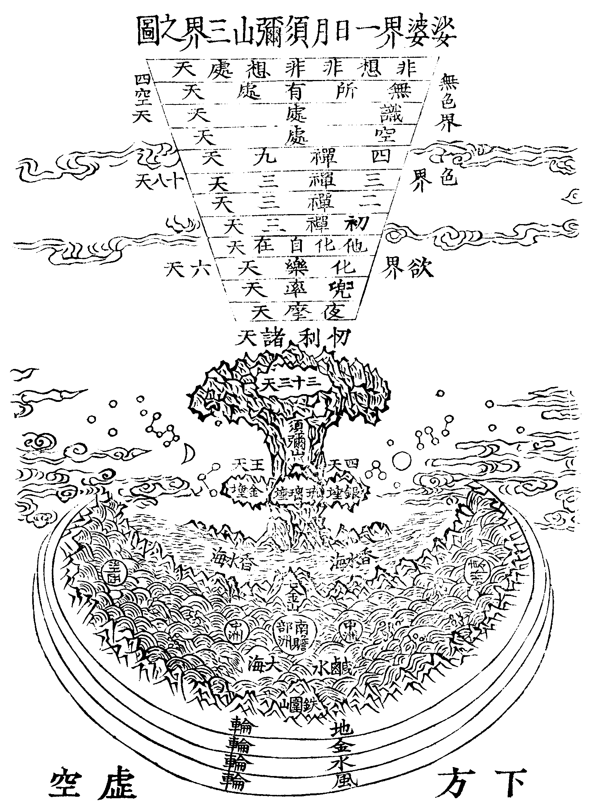

帝釋
梵語釋提桓因。華言能天主。謂能為三十三天之主。昔為人時。姓憍尸迦。建立迦葉佛舍利塔。三十二人助修。共生忉利天。帝釋為主。總名三十三天也。
卍新纂大日本續藏經 第88冊
No.1645 六道集 (5卷)
【清 弘贊輯】
第 1 卷
世俗日下。則立教者日勞。舜之命禹曰。人心惟危。而孟子則曰。人之所以異於禽獸者幾希。葢聖賢相告。其詞宜簡而該。與流俗人言。則其詞宜詳而近。勢則然也。佛說六道之旨。以窮一心之變。極幽明之故。可謂。痛哭流涕。而後之人。猶漠然視之。吾鄉在犙和尚。乃為採古今近事家喻戶曉者。著以為六道集。葢為未悟人說法。不得不然。吾謂。人所以迷而不悟者。有二端。其一曰。吾人也何至流為異物。其一曰。人生快意耳。遑恤他生。然就其一日之間。一念之頃。已不知幾為天。幾為人。幾為畜生餓鬼。誠得秦鏡懸之於前。使其肝膽畢呈。意念盡露。六道之變相。紛紜交錯。一時並見於胸臆之中。庶其懼而知返乎。在和尚博極羣書。著述數十種。年將七十。而緝此集。其指愈淺。其憂愈深。讀者毋徒視為虗誕之談。而忘其為肝膽之照也。 羅浮陳恭尹拜題
和尚本乘願力來。冲齡入道。辯才汜濫。文字縱橫。早年曲唱新豐。調高千古。中歲光韜韶石藏究三車。不欲出世為人。爭奈龍天。弗肯尋住鼎湖方丈。遂令聲價難醻然。卒不樂久居。旋臥象林深處。意謂。靈山會上。笑拈花者。不過一人。丁此末法時。中棒投機者。屈寧多指。矧諸方既富煉凡大冶爐。火方紅。我這裡不妨退步潛身。煙霞共老。與其一期說法。度有限之眾生。孰若多著要書。利無窮之後。學于是。始從韶石。終至象林。中間五十幾白。奚啻億萬餘言。龍也何幸受益良多。獨恨鈍根少領玄趣。然最愛其六道一集。痛醒羣蒙。夫影必隨形。谷必畣響。種瓜不得豆。結果定從因。此理勢之所必然。然俗漢恬不之覺。和尚不舍慈悲。悲夫。眾迷於六道。輪迴靡艾也。猛然拈出示之。昭昭然如揭日月而行。無幽不燭。普使人人。深知報應不爽。因果無差。皆能回光返照。各辦前程者。功不在菩薩下也。龍敢不服膺拳拳乎。僅再拜颺言。而序其上。 旹
康熈二十一年壬戌東莞弟子李龍標頓首拜題
六道集總目
六道集目錄
夫三界定位。六道區分。皆由最初一念識心倐起。而妄想結成有漏之因。故有三世循環。十二緣生。托質則形分麤細。感報則苦樂殊途。三界六道。莫非生滅。人間天上。誠為苦本。是故智人啟悟。妙契無生。頓超三有。踐履十地。息生死之源。處無為之邦。迥脫輪迴。長辭苦趣。此集之由作也。冀諸智者。知三界之無恒。識六趣之非久。標志上乘。希求出世。遠劫火之燒然。免淪墜之沉溺。達今生所受之果。仍酬往昔之因。果復造因。因移果熟。輪轉六道。往還三界。所謂欲。色。無色界也。下極金剛際。上至他化天。中間六趣雜居。一切有情。未離貪欲。故名欲界。自梵眾天。上至色究竟天。此一十八天。雖離欲染。尚有色質。正報身相。如白銀色。依報宮殿。真金赤色。身光互照。故名色界。自空處天。至非非想天。人同碧落。界若虗空。四蘊成身。無色蘊故。故名無色界。如斯三界。亦名三有。以其因屬有漏。果係有為。有生有死故也。言六道者。亦名六趣。趣者名到。謂彼所作善惡業因。道能運到其所趣處。故名為趣。又趣者是歸向義。謂所造之業。歸向人天修羅鬼畜地獄之處。此之界趣。既由識心結成情器世間。若達心源。情器俱殞。悟本真常。生死斯絕。生死真常。元無二路。祇在當人一念。一念不生。三界六道。無投足處矣。
(情世間者。謂一切有情眾生。皆假五陰和合。眾共而生。各各差別不同。故名情世間。器世間者。謂一切無情世界。皆假山河大地而成。各各差別不同。故名器世間)。
康熙己未自恣日寶象林沙門 弘贊 識
No. 1645
六道集卷一
天道
梵語提婆。此云天。天者天然清淨光潔。於諸趣中。最勝最樂。最善最妙。最尊最高。故名為天。苟非最勝之因。豈生最勝淨潔之處。最勝因者。所謂十善。身三口四。及意三行。由此三業。防止過非。有順理義。違不善道。以斯十善。運出五趣。故茲十善戒法。名為天乘。諸天雖眾。不出三界。曰。欲界。色界。無色界。三界區分。共有二十八處。欲界有六。第一從下。上升四萬二千由旬。是四天王天住處。居須彌山半。乃上升之元首。下界之初天。東方曰持國天王。居須彌山東。白銀埵。城名上賢。領乾闥婆。(此云香陰天帝樂神)及毗舍遮。(此云噉精氣鬼)護東州人。南方曰增長天王。居須彌山南青琉璃埵。城名善見。領鳩槃茶。(此云壓魅鬼)及薜茘多。(此云餓鬼)護南州人。西方曰廣目天王。居須彌山西黃金埵。城名周羅。領諸龍。及富單那。(此云臭餓鬼)護西州人。北方曰多聞天王。居須彌山北水精埵。其城有三。一名可畏。二名天敬。三名眾歸。領夜叉。及羅剎。護北州人。四王共有三十二將軍。各有九十一子。具大威力。悉護十方。人間五十歲。此四王天為一晝夜。壽五百歲。(計人間歲九百萬年)從此四王天上升四萬二千由旬。是第二忉利天住處。(忉利此云三十三)居須彌山頂。山頂縱廣八萬四千由旬。而中平可居者。止四萬由旬。四面各有八天。中央善見大城內有金城。是天帝釋住處。共為三十三天。人間一百歲。此天為一晝夜。壽一千歲。(計人間歲。三千六百萬年。以紅蓮華合。青蓮華開為夜。青蓮華合。紅蓮華開為晝)從此忉利天上升十六萬由旬。有處如雲。七寶所成。猶如大地。縱廣八萬由旬。是第三夜摩天住處。(夜摩。此云時分)人間二百歲。此天為一晝夜。壽二千歲。(計人間歲。一萬四千四百萬年)從此夜摩天上升三十二萬由旬。有地如雲。縱廣十六萬由旬。是第四兜率天住處。(兜率此云喜足)人間四百歲。此天為一晝夜。壽四千歲。(計人間歲。五萬七千六百萬年)從此兜率天上升六十四萬由旬。有地如雲。縱廣三十二萬由旬。是第五化樂天住處。(化作五塵而自娛樂)人間八百歲。此天為一晝夜。壽八千歲。(計人間歲。二億三萬零四百萬年)從此化樂天上升十二億八萬由旬。有地如雲。縱廣六十四萬由旬。是第六他化自在天住處。(他化作宮殿園林。一切樂具。於中自在受用)此是欲界頂天。人間一千六百歲。此天為一晝夜。壽一萬六千歲。(計人間歲。九億二萬一千六百萬年)從此上升一倍。二十五億六萬由旬。有地如雲。縱廣十二億八萬由旬。是色界諸天住處。共有一十八天。通號四禪。以其離散動故。亦名梵世。謂其離欲染也。皆以劫數為壽。身白銀色。無男女相。形惟一種。初禪三天。(一梵眾天。壽半劫。是民。二梵輔天。壽一劫。是臣。三大梵王天。壽一劫半。是君。從此倍倍上升。例此可知)二禪三天。(一少光天。壽二劫。二無量光天。壽四劫。三光音天。壽八劫)三禪三天。(一少淨天。壽十六劫。二無量淨天。壽三十二劫。三徧淨天。壽六十四劫)四禪九天。(一無雲天。壽一百二十五劫。二福生天。壽二百五十劫。三廣果天。壽五百劫。四無想天。壽同上。五無煩天。壽千劫。七善見天。壽四千劫。八善現天。壽八十劫。九色究竟天。壽一萬六千劫。此是色界頂天。後之五天。名淨居天。是三果聖人居處)從此上升一倍。是無色界。共有四天。亦名四空天。人同碧落。界若虗空。惟有受。想。行。識。四陰。無色陰故。故名無色界。一空處天(壽二萬大劫)。二識處天(壽四萬大劫)。三無所有處天(壽六萬大劫)。四非非想處天(壽八萬大劫)。然此三界諸天壽數雖定。而亦有中夭者。惟兜率天。及無想天。壽命皆定。不說中夭也。
正法念處經云。若持不殺戒。得生四天王處。若持不殺不盜。得生三十三天。若持不殺盜邪婬。得生夜摩天。若持不殺盜邪婬。妄語。兩舌。惡口。綺語。得生兜率天。奉行佛戒。兼身口七善業。得生化樂。他化自在天。業報差別經云。若眾生具修增上十善。得欲界天報。修有漏十善。與定相應。得色界天報。修四空定。得無色界天報。順正理論云。六欲諸天初生。如次。如五六七八九十歲人。生已。身形速得圓滿。男生在天父右膝。女生在天母左膝。皆悉化生。或有於天母手華。忽然化生。阿含經云。兒來未久。便知饑渴。自然寶器。盛百味飲食。若福多者。飯色自白。中者黃色。下者赤色。若渴則飲。寶器中甘露漿。入腹漸消。如酥投火。無復形影。亦無大小便利。死如燈燄滅。無有屍骸。以化生故也。色界天眾。於初生時。身量周圓。具妙衣服。一切天眾。皆作聖言。不由學習。自解典語。起世經云。欲界諸天。皆食段食。色界諸天。從初禪乃至遍淨天。以喜為食。無色界諸天。以意業為食。有云。色界無色天。並以禪悅法喜為食。涅槃經云。雖得四天王。他化自在天身。乃至梵天。非非想處天身。命終還墮三惡道中。天報盡時。五衰相現。身受大苦。如地獄苦。等無差別。成實論問曰。生天離惡積善。何故報盡。即入三途。答曰。凡夫無始已來。惡業無窮。一日貪瞋。尚受千形。況惡既多。暫伏結生。報福既盡。昔業時熟。還墮三途。何所致惑。為有識心達本者。能破三界二十五有。故云。若人識得心。大地無寸土。經云。一人發真歸源。十方世界。盡成消殞。如未能達本歸源。則一心念佛。發願往生淨土。聞佛說法。悟無生忍。則頓超三界。迴絕輪迴矣(梵世。梵者淨也)。

法句喻經云。昔者天帝釋。五德離身。自知命盡。當下生世間。在陶作家。受驢胎身。既知福盡。甚大愁憂。自念三界之中。濟人苦厄。惟有佛耳。於是馳往佛所。稽首作禮。伏地至心。三自歸命佛。法。聖眾。未起之間。其命忽出。便至陶家驢母腹中作子。時驢自解走瓦坏間。破壞坏器。其主打之。尋時傷胎。其神即還入故身中。五德還福。復為天帝。佛從定起。讚言。善哉天帝。能於殞命之際。歸命三尊。罪對已畢。不更勤苦。爾時世尊。以偈頌曰。所行非常。謂興衰法。夫生輒死。寂滅為樂。譬如陶家。埏埴作器。一切要壞。人命亦然。帝釋聞偈。知無常之要。達罪福之變。解興衰之本。尊寂滅之行歡喜奉受。得須陀洹道(五德離身。即五衰相現。一衣服垢穢。二頭上華萎。三腋下汗流。四身體臭穢。五不樂本座。反上即五德也。凡言經云。律云。是釋迦如來親說。若言論云。乃菩薩羅漢註釋經律。之語)。
天竺
無著菩薩
健馱邏國人也。佛去世後一千年中。誕靈利見。承風悟道。出家修學。其弟世親菩薩。出家受業。博聞強識。達學研機。無著弟子師子覺。密行莫測。高才有聞。二三賢哲。每相謂曰。凡修行業。願覩慈氏。若先捨壽。得遂宿心。當相報語。以知所至。其後師子覺先捨壽命。三年不報。世親菩薩。尋亦捨命。時經六月。亦無報命。時諸外道。咸皆譏誚。謂世親及師子覺。流轉惡趣。遂無靈鑒。其後無著菩薩。於夜初分。方為門人。教授定法。燈光忽翳。空中大明。有一天人。乘虗下降。即進階庭。敬禮無著。無著曰。爾來何暮。今名何謂。對曰。從此捨壽。往覩史多天。慈氏內眾。蓮華中生。蓮華纔開。慈氏讚曰。善來廣慧。善來廣慧。旋繞纔周。即來報命。無著菩薩曰。師子覺者。今何所在。答曰。我旋繞時。見師子覺。在外眾中。耽著天樂。無暇相顧。詎能來報。無著菩薩曰。斯事已矣。慈氏何相。演說何法。答曰。慈氏相好。言莫能宣。演說妙法。義不異此。然菩薩妙音。清暢和雅。聞者忘倦。受者無厭。云云(出西域記。覩史多。舊曰兜率。慈氏。即彌勒也。佛經律論三藏。所載人生六道中。或從六道中來者甚多。茲僅錄一二。以彰其餘。即如此土所共見聞者。亦不能盡錄惟錄其要。俱見如下)。
晉
孫稚
○字法暉。齊國般陽縣人也。父祚。晉太中大夫。稚幼而奉法。年十八。以咸康元年八月病亡。父後移居武昌。至三年四月八日。沙門于法。街行尊像。經過家門。夫妻大小出觀。見稚亦在人眾之中。隨侍像行。見父母拜跪問訊。隨共還家。祚先病。稚云。無他禍崇。不自將護所致耳。五月當差。言畢辭去。其年七月十五日。復歸問訊。悉如生時。說其外祖父。為太山府君。見稚曰。汝未應來。那得至此。稚答。伯父將來。欲以代譴。有教推問。欲鞭罰之。稚救解得原。稚兄容。字思淵。時在其側。稚謂曰。雖離故形。在優樂。處但讀書。無他作。願兄勿復憂也。但勤精進。繫念修善。福自隨人矣。我二年學成。當生國王家。同輩有五百人。今在福堂。學成皆當上生。第六天上。我本亦應上生。但以解救先人。因緣纏縛。故獨生王家耳。到五年七月七日復歸。說邾城當有宼。難事例甚多。悉皆如言。家人祕之。故無傳者。又云。先人多有罪讁。宜。為作福。我今受身人中。不須復營。但救先人也。願父兄勤為功德。作福供僧。食時務使鮮潔。一一如法者。受上福。次者次福。若不能如言。皆費設耳。當使平等。心無彼我。其福乃多。祚時有婢。稚未還時。忽病殆死。通身皆痛。稚云。此婢欲叛。我前與鞭。不復得去耳。婢云。前實欲叛。與人為期。日垂至。而便住。云云(太同泰)。
董青建
○父字賢明。建元初。為越騎校尉。初建母宋氏。孕建時。夢有人語云。爾必生男。體上當有青誌。可名青建。及生。如言即名焉。有容止。美言笑。性理寬和。家人未甞覩其慍色。見者咸異之。至年十四。而州迎主薄。建元初。皇儲鎮樊漢。為水曹參軍。二年七月十六日寢疾。自云必不振濟。至十八日臨終起坐。謂母曰。罪盡福至。緣累永絕。願母自割。不須憂念。因七聲大哭。聲盡而絕。至閏月十一日。賢明夢見建云。願父暫出東齋。賢明便香湯自浴齋戒。出東齋。至十四夜。於眠中。聞建喚聲。驚起。見建在齋前。如生時。父問曰。汝往在何處。建云。從亡來。住在練神宮中。滿百日。當得生忉利天。建不忍見父母兄弟哭泣傷慟。三七日禮諸佛菩薩。請四天王。故得暫還。願父母從今已後。勿復啼哭祭祀。阿母已發願。求見建。母不久當命終。即共建同生一處。父壽可得七十三。命終之後。當三年受罪報。勤苦行道。可得免脫。問曰。汝從夜中來。那得有光明。建曰。今與菩薩諸天共下。此其身光耳。又問云。汝天上識誰。建曰。見王車騎。吳興張永。外祖宗西河。我非獨但此一門中生。從四十七年以來至今。七死七生。已得四道果。先發七願。願生人間。故歷生死。從今永畢。得離七苦。建臨終時。見七處生死。所以大哭者。與七家分別也。問云。汝皆生誰家。建曰。生江縣吏部羊布。廣州張永。車騎王玄。宋謨。蕭惠明。給事梁季父。今生董越騎家。惟此間生十七年。餘處止五三年耳。自今已後。毒癘歲多。宜勤修功德。建見世人死。多墮三途。生天者少。勤精進。可得免度。發願生天。亦得相見。行脫差異。無相值期。又問云。汝母憂憶汝。垂死。可令見汝不。建曰。不須相見。益懷煎苦耳。但依向言說之。諸天已去。不容久住。慘有悲色。忽然不見。去後。竹林左右。猶有香氣。家人亦並聞餘香焉(建。乃初果須陀洹人。七死七生漏盡。而證得第四阿羅漢果。出三界。故云。從今永畢得離諸苦。然建所生處。皆是善門也)。
歷陽
○張應者。本事俗神。鼓舞淫祀。咸和八年。移居蕪湖。妻得病。應請禱備至。財產略盡。妻法家弟子也。謂曰。今病日困。求鬼無益。乞作佛事。應許之。往寺中見竺曇鎧。曇鎧曰。佛如愈病之藥。見藥不服。雖見無益。應許當事佛。曇鎧與期。明日往齋。應歸。夜夢見一人長丈餘。從南來入門。曰。汝家狼籍。乃爾不淨。見曇鎧隨後曰。始欲發意。未可責之。應既眠覺。便炳火作高座。及鬼子母座。曇鎧明往。應具說夢。遂受五戒。斥除神影。大設福供。妻病即除愈。咸康二年。應至馬溝糴鹽。還泊蕪湖浦宿。夢見三人。以鎠鈎。鈎之。應曰。我佛弟子。牽終不置。曰。汝叛走多時。應怖。謂曰。放我。當與君一升酒。彼乃放之。謂應曰。但畏後人復取汝耳。眠覺腹痛泄痢。達家大困。應已久病甚。遣人呼鎧。適值鎧不在。應尋氣絕。經日而甦。說有數人。以鎠鈎。鈎將北去。下一坂岸。岸下見有鑊湯。刀劒。楚毒之具。應時悟是地獄。欲呼師名。忘曇鎧字。但喚和尚救我。亦時喚佛。有頃。一人從西面來。形長丈餘。執金杵。欲撞此鈎人。曰。佛弟子也。何入此中。鈎人怖散。長人引應去。謂曰。汝命也盡。不復久生。可蹔還家。頌唄三偈。并取和上名字。三日當復命過。即生天矣。應既甦。即復怵然。既而三日持齋頌唄。遣人疏取曇鎧名。至日中食畢。禮佛讀唄。徧與家人辭別。澡洗著衣。如眠便盡(唄者。讚也。謂讚歎三寶也。諷經亦曰唄。偈者。佛經中偈頌也。怵音出。憂也。悚懼也)。
襄陽
○史世光。咸和八年。於武昌死。七日請沙門支法山。為誦小品般若經。疲而微臥。聞靈座上。如有人聲。史家有婢字張信。見世光在靈上著。衣帢。具如生平。語信云。我本應墮龍中。支和尚為我誦經。曇護。曇堅。迎我上第七梵天。快樂處矣。護堅。並是山之沙彌。已亡者也。後支法山。復往為誦大品般若經。又來在座。世光生時。以二旛在寺中供養。乃呼張信。持旛送我。信曰諾。便絕死。將信持旛。俱西北飛上一青山上。如瑠璃色。到山頂。望見天門。光乃自提旛。遣信令還。與一青香如巴豆大。囑曰。以上支和尚。信未還。便遙見世光直入天門。信復道而還。倐忽甦活。亦不復見手中香也。旛亦故在寺中。世光與信於家去時。其六歲兒見之。指語祖母曰。阿爺飛上天。婆為見否。世光後復與天人十餘。俱還其家。徘徊而去。每來必見簪帢去。必露髻。信問之。光答曰。天上有冠。不著此也。後乃著天冠。與羣天人。鼓琴行歌。徑上母堂。信問。何用屢來。光曰。我來欲使汝輩知罪福也。亦兼娛樂。阿母。琴音清妙。不類世聲。家人小大。悉得聞之。然聞其聲。如隔壁障。不得觀察也。惟信聞之。獨分明焉。有頃去。信見光入一黑門。須臾來出。謂信曰。舅在此。日見榜撻。楚痛難堪。我省視還也。舅生前犯殺罪。故受此報。可告舅母。請僧[言*奉]經。當稍免脫。舅昔輕車將軍也(第七梵天。即初禪天在六欲天上)。
宋
江陵
○釋黃遷。年二十時。常寄江陵市西。楊道產家。行般舟。勤苦歲餘。因爾遂頗有感變。或一日之中。赴十餘處齋。雖復終日竟夜行道轉經。而家家悉見黃遷在焉。眾稍敬異之。以為得道。孝建二年一日。自言死期。謂道產曰。明夕吾當於君家過世。至日。道產設八關然燈通夕。初夜中夜。遷猶豫眾行道。休然不異。四更之後。乃稱疲而臥。顏色稍變。有頃而盡。闔境為設三七齋。起塔。塔今猶存。死後久之。現形多寶寺。謂曇珣道人云。明年二月二十三日。當與諸天共相迎也。言已而去。曇珣即於長沙禪坊。設齋九十日。捨身布施。至其日苦乏氣。自知必終。大延道俗。盛設法會。三更中。呼問眾僧有聞見否。眾自不覺異也。珣曰。空中有奏樂聲。馨煙甚異。黃遷之契。今其至矣。眾僧始還堂就席。而珣已盡(右五出冥祥記。此記十卷。齊朝王琰撰)。
酒泉郡
○凡太守到郡無幾輒死。後有渤海陳裴。見使此郡。裴憂愁不樂。就卜者占其吉凶。卜者曰。遠諸侯。放伯裘。能解此者。則無憂。裴仍不解此語。卜者報曰。但去自當解之。裴既到官。侍監有王侯平。有史侯。董候等。裴心悟曰。此所謂諸候矣。乃遠之。即臥。思放伯裘之義。不知何謂。至夜半後。有物來上裴被上。裴覺。以被冒取之。其物跳踉。訇訇作聲。外人聞。持火入。欲殺之。魅乃言曰。我實無惡意。但欲試府君耳。聽一相赦。當深報府君恩。陳裴曰。汝為何物。而忽干犯太守。魅曰。我本百歲狐也。今變為魅矣。垂化為神。而正觸府君威怒。甚遭困厄。聽一放我。我字伯裘。若府君有急難。但呼我字。則自解矣。裴乃喜曰。卜謂放伯裘之義是也。即便放之。小開被。忽然有赤光。如震電。從戶出。明日夜。有敲戶者。裴問曰。誰。答曰。伯裘。問曰。何為。答曰。白事。問曰。白何事。答曰。此界有賊發奴也。裴案發則驗。每事先以語裴。於是境界。無毫毛之奸。人咸謂聖君出。後經月餘主簿李音。共裴侍婢私通。既而驚懼。慮伯裘來白。遂與諸侯謀殺裴。却謂傍無人。便使諸侯持杖直入。欲格殺之。裴惶怖。即呼伯裘。來救我。即有物如申一疋絳練。然作聲音。侯伏地失魂。乃以次縛取之。考問來意。故皆服首。後月餘日。裘與裴辭曰。今得為神矣。當上天去。不復與府君相見往來。遂去不見也(出搜神異記)。
梁
武帝妃
○妃郗氏。初生有赤光照室。器皿盡明。及長性明慧。善隷書。讀史傳。女工之事。靡不閑習。宋齊間。諸王求婚。父曄皆不許。後以適帝。生三女。帝為雍州刺史。而妃薨。其性酷妒。天監年。化為巨蟒。入於後宮。通夢於帝。帝體將不安。蟒輒激水騰涌。或現龍形。光彩照灼。時蟒作人語。啟帝曰。妾以生存。嫉妒大小。為性慘毒。損物害人。死為蠎身。無飲食饑窘困迫。又一鱗甲內。有多蟲唼咬肌肉。痛苦甚劇。感帝昔眷念於妾。故陳露於帝。祈一功德。以見拯拔。帝聞之感激。因此露井上為殿。衣服委積。置銀轆轤。金瓶灌百味。以祀之。帝乃大集沙門於殿。宣問何善能脫其苦。誌公對曰須禮佛懺滌。其愆可脫。於是帝與誌公。及名德沙門。搜索。大藏經文。採摭佛語。感彌勒題名。撰成懺文十卷。在宮修禮。忽聞異香馥郁。帝因仰觀。乃見一天人容儀端麗。謂帝曰。蒙帝功德。已脫蟒身。得生忉利天上。今呈天身。以為證驗。殷勤致謝。言訖不見(出通載并懺序)。
蜀郡
○龍淵寺。沙門慧韶姓陳。本頴川太丘人。少欲多智。聦敏不羣。春秋五十四。卒於本寺。時成都民姓應名始豐。因病氣絕。而心尚煖。五日方醒。云。被攝至閻王所。聞處分云。迎韶法師。須臾便至。王下殿。合掌頂禮。更無言說。惟書文書。作一大政之字。韶出外。坐於曠路樹下。見一少童。以漆柳箕。擎一袈裟。令韶著之。有數十僧來迎。豐惟識和慈。二禪師。幢蓋列道。騰虗而去。又當終夕。有安浦寺尼。久病悶絕。醒云。送韶法師。及五百僧。登七寶梯。到天宮殿。講堂中其地如水精。牀席華整。亦有麈尾。几案蓮華池。韶就座談說少時便起。送別者令歸。其生滅冥祥。感見類此。以天監二年七月三日卒(出續高僧傳)。
元魏
中天竺
○沙門勒那。此云寶意。是西國人。徧通三藏。妙入總持。以魏永平之初。來遊東夏。宣武皇帝。每請講華嚴經。披閱精義。無廢一日。正處高座。忽有一人持笏執名者。形如大官。云。奉天帝命。來請法師。講華嚴經。意曰。今此法席尚未停止。待訖經文。當來從命。既而法事將了。又見前使云。奉天帝命。故來下迎。意乃含笑熈怡。告眾辭訣。奄然卒於法座。都講等四人。亦同時殞。魏境道俗。聞見斯異。無不嗟歎。
隋
相州
○鄴下寺。釋玄景。統解玄微。純講大乘。後因臥疾三日。告侍人曰。玄景欲見彌勒佛。云何乃作夜摩天主。又云。賓客極多。事須看視。有問其故。答云。凡夫識想。何可檢校。向有天眾。欲來邀迎耳。爾後異香充戶。眾共聞之。又曰。吾欲去矣。當願生世。為善知識。遂終於所住。即大業二年六月也。自生常立願云。沈骸水中。及歿後。遵用前旨。葬於紫栢河。深瀅之中。三日往觀。所沈之處。反成沙墳。極高峻。而水分派。道俗異其雅瑞。傳跡于今(右二。出續高僧傳)。
潞州
○刺史辛彥之。建十五層浮圖。州人張元。暴死復甦云。神遊天上。見一堂極崇麗。天人曰。辛刺史有大功德。作此堂以俟之。
海東
○新羅國。玄光禪師。參南嶽。證法華三昧。師即禮辭南嶽。返錫江南。值本國海舶。遂獲附載。方及大洋。忽覩采雲亂目。雅樂盈空。絳節霓旌。傳呼而至。空中聲云。天帝請海東玄光禪師。師拱手遜避。舟停不進。即見青衣恭迎入大宮闕。見羽衛陳列。鱗介繁錯。間以鬼神。咸仰敬曰。天帝降我龍宮。請法師說已證法門。吾曹受益不少矣。既升殿。請陟高臺。天帝扣問。師為開演經七日而畢。帝躬送別。向所乘舟。師復登之。舟遂泛泛而去(右二出統紀)。
唐
京師
○大安國寺。子鄰法師。年少時。忽思歸覲二親。其父喪明。母終已三載。因詣嶽廟。求知母之幽趣。即敷坐具。誦法華經。誓見天嶽王為期。其夜嶽王。果召鄰問。何故懇苦如是。鄰曰。母王氏。亡來已經除服。敢問大王。母今何在。王顧簿吏。對曰。王氏現繫獄受苦。鄰曰。我母何罪。王曰。生和尚時。食雞卵。又取白傅頭瘡。坐是之故。職師之由。鄰悲號委頓。求王請免。曰。縶縻有分。放釋無門。然則為法師計。請往鄮山。禮阿育王塔。或可原也。鄰詰朝。遵途。到會稽鄮陰山寺。叩頭哀訴。五輪著地。禮畢。數所投策。至四萬數。俄聞有呼鄰聲。若蔡順之解。望空。見雲氣中。母謝曰。承汝之力。得生忉利天矣。故來報汝。倐然不見。先所禮處。今鄮山育王寺。後峰之翠微茅菴基。及池存焉(古人分娩食雞卵。尚得重報。今人娩後多殺生命罪當如何。為母為子者。不可不知。鄮山在浙江寧波府城。東南四十里許。阿育王塔。詳見第四卷中。○縶音執。絆也縻音縻繫也)。
壽州
○紫金山。玄宗禪師。永嘉人。見紫金山。悅可自心。留行禪觀。此山先多虎暴。或噬行商。或傷樵子。避苛政者。哭婦甚哀。從宗卜居。哮噉絕跡。自邇入山者無憚矣。一日禪徒擁集。見一老父。趨及座前。拜跪勤恪。宗曰。子何人耶。答云。我本虎也。在此山中。食噉眾生。因大師化此。冥迴我心。得脫業軀。已生天道。故來報謝。折旋之頃。了無所見(右二出宋高僧傳)。
長安
○西明寺。道宣律師者。德鏡玄流。業高清素。精誠苦行。畢命終身。棲遑問道。志在住持。綴緝儀範。二百餘卷。結集高軌。屬有深旨。貞觀中。曾隱沁部雲室山。人睹天童給侍左右。於西明寺夜行道。足跌前階。有物扶持。履空無害。熟顧視之。乃少年也。律師遽問。何人夜中在此。少年曰。某非常人。乃北方多聞天王之子那吒也。護法之故。擁護和尚。時之久矣。師曰。貧道修行。無煩太子。太子威神自在。西域有可作佛事者。願為致之。太子曰。某有釋迦佛牙。寶掌雖久。頭目猶捨。敢不奉獻。俄授於師。師保錄供養焉。粵以乾封二年。仲春之節。身在京師。城南淨業寺。逐靜修道。年至桑榆。氣力將衰。專念四生。又思三會。忽以往緣。幽靈顧接。病漸瘳降。勵力殷仰。遂感冥應。時四天王至。問訊律師。廣序賢劫四佛興世。涅槃遺跡等事。復有諸天。四王臣佐。至律師房門。似人行動。蹀足出聲。律師問言。是誰。答言。弟子姓張名瓊。師問。何處檀越。答言。是南方天王之第十五子。王有九十一子。英略神武。各御邦都。所統海陸。道路區分。持犯界別。並親受佛教。護持善惡。使遺法載隆。積殖其功。常加守護。不徒設也。師曰。檀越既遺德劣。故來相看。何故門首不入。答云。弟子不得師教。不敢輒入。師云。願入就座。入已。禮敬伏座。問曰。檀越既篤信三寶。又受佛囑護持。善來相看。何不現形。答言。弟子報身。與餘人別。光色又異。驚動眾心。共師言論足得。不勞現身。問曰。貧道入春已來。氣力漸弱。醫藥無效。未知報命遠近。答云。師報將盡。無煩醫藥。問曰。定報何日。答云。何須道時。但知師不久盡。生第四天彌勒佛所。問曰。同伴是誰。答曰。弟子第三兄張璵。通敏超悟。信重釋宗。撰祇洹圖經。百有餘卷。烈峙天宮。無聞地府。師承此告。及踊思尋請述之。用開道俗。又一天來至師所。致敬申禮。具敘暄凉。師問曰。檀越何處。姓字誰耶。答曰。弟子姓王名璠。是大吳之蘭臺臣。今是南方天王韋將軍下之使者。將軍事務極多。擁護三洲之佛法。有鬬諍凌危之事。無不躬往和喻令解。今附和南。不久當至。復有一天來云。姓羅氏。是蜀人也。言作蜀音。廣說律相。初相見時。如俗禮儀。敘述緣由。多有次第。又有一天姓費氏。禮敬如前。云。弟子迦葉佛時。生在初天。在韋將軍下。諸天貪欲所醉。弟子以宿願力。不交天欲。清淨梵行。偏敬毗尼。韋將軍。童真梵行。不受天欲。一王之下。有八將軍。四王三十二將。周四天下。往還護助。諸出家人。四天下中。北天一洲少有佛法。餘三天下。佛法大弘。然人多犯戒。少有如法。東西天下。人少黠慧。煩惱難化。南方一洲。雖多犯罪。化令從善。心易調伏。佛臨涅槃。親受付囑。並令守護。不使魔嬈。若不守護如是破戒。誰有行我之法教者。故佛垂誡。不敢不遵。雖見毀禁。愍而護之。見行一善。萬過不究。事等忘瑕。不存往失。且人中臭氣上薰空界。四十萬里。諸天清淨。無不厭之。但以受佛付囑。令護佛法。與人同止。諸天不敢不來。韋將軍三十二將之中。最存弘護。多有魔子魔女。輕弄比丘。道力微者。並為惑亂。將軍棲遑奔至。應機除剪。故有事至。須往四王所。時王見皆起。謂韋將軍。修童真行。護正法故。弟子性樂戒律。如來一代所制毗尼。並在座中。聽受戒法。問云。益州成都。多寶石佛者。何代時像。從地涌出。答曰。蜀都元基青城山上。今之成都。大海之地。昔迦葉佛時。有人於西耳河造之。擬多寶佛全身相也。其地西北。去雟州二千餘里。問去天竺非遠。往往有至彼者。至晉時。有僧於此地。見土墳。隨出隨除。終不可平。後見坼開。乃深掘丈餘。獲像及人骨。在船。其髏骨肘脛。悉皆麤大。數倍過於今人。即迦葉佛時。閻浮提人壽二萬歲時也。今時劫減。命促。人小。固不常然。不可怪也。初出之時。牽曳難得。弟子化為老人。指撝方便須臾。至周滅法暫隱。到隋重興。更復出之。蜀人但知其靈。從地而出。亦不測其根源。見其華趺。有多寶字。因遂名焉。又問。多寶字。其隷書。出於亡秦之代。如何迦葉佛時。已有此國書耶。答曰。亡秦李斯隷書。此乃近代。遠承隸書之興。興於古佛之世。現今南洲四面。千有餘洲。莊嚴閻浮一方。百有餘國。文字言音。同今唐國。但以海路遼遠。動數十萬里。重譯莫傳。故使此方封守株柱。不足怪也。師不聞乎。梁顧野王大學之太傅也。周訪字源。出沒不定。故玉篇序云。有開春申君墓。得其銘文。皆是隷字。檢春申。是周武六國同時隸文。則非吞併之日也。此國篆隷諸書。尚有茫昧。寧知迦葉佛時之事。史非其耳目之所聞見也。又問。今西京城西。高四土臺。俗云是蒼頡造書之臺。如何云隷書字。古時已有。答云。蒼頡於此臺上增土造高。觀鳥迹者。非無其事。且蒼頡之傳。此土罕知其源。或云黃帝之臣。或云古帝王也。鳥迹之書。時變一途。今所絕有。無益之言。不勞述也。又一天人。姓陸名玄暢。來謁律師云。弟子是周穆王時。生在初天。本是迦葉佛時。天為通化。故周時暫現。所問高四土臺者。其本迦葉佛。於此第三會說法度人。至穆王時。文殊目連來化。穆王從之。即列子所謂化人者是也。化人示穆王高四臺。是迦葉佛說法處。因造三會道場。至秦穆公時。扶風獲一石佛。穆公不識。棄馬坊中。穢汙此像。護像神瞋。令公染疾。公又夢上帝極責。覺問侍臣由余。答云。臣聞周穆時。有化人來此土云。是佛神。穆王信之。於終南山。造中天臺。高千餘尺。基址現在。又於蒼頡臺。造神廟。名三會道場。公今所患。殆非佛為之耶。公聞大怖。語由余曰。吾近獲一石人。衣冠非今所製。棄之馬坊。將非此是佛神耶。由余往視之。對曰。此真佛神也。公取像澡浴。安清淨處。像遂放光。公又怖。謂神瞋也。宰三牲以祭之。諸善神等。擎棄遠處。公又大怖。以問由余。答曰。臣聞佛神清潔。不進酒肉。愛重物命。如護一子。所有供養。燒香而已。所有祭祀。餅果之屬。公大悅。欲造佛像。絕於工人。又問由余。答曰。昔穆王造寺之側。應有工匠。遂於高四臺南村內。得一老人。姓王名安。年百八十。自云曾於三會道場。見人造之。臣今年老。無力能作。所住村北。有兄弟四人。曾於道場內。為諸匠執作。請追共造。依言作之。成一銅像。相好圓備。公悅。大賞賚之。彼人得財。並造功德。於土臺上造重閣。高三百尺。時人號之高四臺。或曰高四樓。其人姓高。大者名四。或曰兄弟四人。同立故也。又問。目連舍利弗。佛在已終。如何重見。答曰。同名六人。此目連。非大目連也。釋迦如來。度大迦葉。後十二年中。來至此臺。其下現有迦葉佛舍利。周穆身遊天竺。佛告穆王。彼土現有古塔。可返禮事。王問何方。佛曰。在鄗京之東南也。又問。今五臺山。中臺之東南。三十里。見有大孚靈鷲寺。兩堂隔澗猶存。南有華園。可二頃許。四時發彩。或云漢明所立。或云魏孝文帝栽植。如何為實。答云。但是二帝所作。昔周穆之時。已有佛法。此山靈異。文殊所居。周穆於中造寺供養。及阿育王亦依置塔。漢明之初。摩騰法師。是阿羅漢。天眼亦見有塔。請帝立寺。其山形像似靈鷲。名曰大孚。孚者信也。由帝深信佛法。立寺勸人。元魏孝文。北臺不遠。常來禮謁。見人馬行迹。石上分明。其事可驗。豈惟五臺獨驗。今終南山。太白。太華。五嶽名山。皆有聖人。為住持佛法。令法久住。有人設供。感赴徵應。事在別篇。不繁此述也。問。羅什法師。一代所翻之經。人多偏樂。受持轉盛何耶。答曰。其人聰明。善解大乘。以下諸人。同時翻譯者並儁。又一代之寶也。絕後光前。仰之所不及。故其所譯。以悟達為先。得佛遺寄之意。什師德行。位在三賢。所在通化。那煩補闕。隨機而作。故大論一部。十分略九。自餘經論。例此可知。冥祥感應。歷代彌新。深會聖旨。罕逢難遇。又蒙文殊指授。令其刪定。特異恒論。又問。幽冥所感。俗中常有神去形朽。如何重來。或經七日多日。如生不異。答曰。人稟七識。識各有神。心識為主。主雖前去。餘神守護。不足怪也。如五戒中。一戒五神。五戒便有二十五神。一戒破。五神去。餘者仍在。如大僧受戒。戒有二百五十。神亦戒戒之中。感得二百五十。防衛比丘。若毀一戒。二百五十神去。餘者恒隨。於是律師。既承靈囑。扶疾筆受。隨聞隨錄。合成十卷。律師憂報將盡。復慮天人將還。筆路蒼茫。無暇餘事。文字亦復疏略。但求聖意。不存文飾。耳目雖倦。不覺神勞。但恨知之不早。今依天人所說。不違三藏教旨。即皆編錄。雖聞天授。還同佛說。始從二月。迄至六月。日別來授。無時暫閑。至冬初。十月三日。師氣力漸微。香旛遍空。天人聖眾。同時發言。從兜率天來請律師。師端坐。一心合掌。斂容而卒。臨終道俗百有餘人。皆見香華迎往昇空。云云(出法苑。并高僧傳。其餘鳥獸僧俗生。天。備載經論。及兜率龜鏡集中。真武。乃北方一神耳。今道士以那吒太子。帶貼髏。立真武側。罪莫大焉)。
嵩山
○破竈墮和尚。名氏叵測。天后之世。參嵩山安禪師。通徹禪法。逍遙弗羇。山有廟。靈甚。殿中惟有一竈。遠近烹宰祭祀。凡人拜奏之時。往往見鬼物形兆。師領徒入廟。以杖擊竈三下曰。咄。此竈泥瓦合成。聖從何來。靈從何起。恁麼烹宰物命。又擊三下。遂傾破墮落。須臾。有一人。青衣峨冠。拜曰。我本竈神。久受業報。今蒙師說無生法。得脫此處。今當生殊勝天上。特來禮謝。師曰。汝是本有之性。非吾強言。神再拜而去(出通載及宋高僧傳○今人被擊。即大生瞋怒。若不瞋怒。如擊木石無異。奚契一咄泥瓦合成之旨。其有伶俐漢子。於此言下薦得。即會無生法矣○叵音頗。不可也)。
循州
○北山神。宣律師問天人曰。南海循州北山。興寧縣界。靈龕寺。多有靈跡。何也。天人曰。此乃文殊聖者弟子。為此山神。多造惡業。文殊愍之。便來教化。遂識宿命。請為留迹。我常禮事。得離諸惡。文殊為現。今者是也。於貞觀三年。山神命終。生兜率天(見付囑儀○按上生經云。佛言。善男子善女人。犯諸禁戒。造眾惡業。聞彌勒菩薩大悲名字。五體投地。誠心懺悔。是諸惡業。速得清淨。我滅度後。四眾八部。欲生第四天。當於一日。乃至七日。繫念彼天。持佛禁戒。思念十善。行十善道。以此功德。迴向願生彌勒佛前。隨念往生。所言七日者。且從近論。尚感天報。況復一生而不尅獲乎。未曾有經。有受十善之法。此不繁出。言第四天者。名兜率陀天。是彌勒菩薩。於中教化諸天子。若生彼處。即得不退轉地○生兜率天。有數十人。出高僧傳。及兜率龜鏡集中)。
于闐國
○沙彌般若彌伽薄。堅持戒行。專誦華嚴。時忽有人合掌言。諸天請師。願師閉目。俄至天上。天帝釋跪而請曰。今方與修羅戰。屢被摧衂。屈師誦華嚴經。望法力加被。師乘天輅。心念華嚴。以諸天眾。對彼勍敵。修羅見之。忽然潰散。須臾。送歸。身染天香。終身不滅(出華嚴感應錄)。
清
廣州
○南海縣。麻奢鄉。陳公孺。性懷耿侃。喜客無倦。不尚奢美。惟好儉樸。晚年歸信法門。受持六齋。倐興剏立精舍之念。於康熙丙午年。捨宅後地。為寶象林。建瑞塔禪寺。誘諸子姪。而趣向佛乘。故令一方知崇三寶。遠惡修善。實藉公焉。癸丑歲。公年六十有六。感微疾數旬。至五月初五日。使人扶遊茘圃。以賞新茘。是夜寂然長逝矣。本寺僧眾。即為之修禮懺法。時有沙彌藏一。自東安石驎菴來。執大殿香燈職。午飯畢。趺坐殿後。俟茶上供。而頭忽垂至膝。同坐者。謂其瞌睡。以手觸之不動。方知已絕。呼人共舁上牀。移時乃甦。眾詰之。一曰。初見前殿門外。有數金甲神人。雄偉勇聳。列跪門前。天人雜沓。窒塞虗空。幢旛寶蓋。香華燈燭。樂音徧界。中有一人甚高大。極目望不至首。有二大旛。一題云娑羅樹王佛。一題云越三界菩薩。有二天童。各執一小旛。一題云。妙喜世界。一題云極樂天幢。復有一旛。遣藏一執。云。送山主往化樂天。一執之出門。方至橋首。見二長老在後喚云。你未得去。藏一聞之。即便回也。化樂。是欲界第五天也。余惜公入法門日淺。未知出世大道。由福報故。生化樂天。不然。即生第四兜率天。親承彌勒大士。聞深妙法。與給孤長者。把臂同遊龍華三會。證無生忍。寧不快哉(寶象林釋慧弓綠○龍華。謂彌勒佛。當來坐於龍花樹下。成等正覺。三會說法度人。故也。妙喜。是東方阿閦毗佛世界。極樂。是西方阿彌陀佛世界。阿閦毗。此云不動。阿彌陀此云無量壽。若據旛。則公當隨生一佛世界。或其人採語不真。亦未可知。以化樂。極樂。音相近也。若人誠心繪塑佛像。即生妙喜世界。一心專念阿彌陀佛名號。即生極樂世界。按上五旛。俱是接引徃生者。故有佛菩薩聖號。然造旛之法。須知有能嚴。所嚴。能嚴者。旛即供具。莊嚴供養於所供佛塔。或諸佛菩薩。不應安佛菩薩尊像。當作禽獸形。或書讚頌偈詞。其所嚴者。是所敬之尊。乃書佛菩薩聖號。即以香華燈燭。種種果食百珍。而供養之。按諸經律。令造旛者。皆是能嚴之旛。如昔給孤長者。既作塔已。欲以旛旗。并雜繪綵。而為供養。佛言。應作。彼不解旛式。佛言。聽作師子旛。犎牛旛。金趐鳥旛。及龍旛等。於上畫作彼之形像。又普廣經云。若四輩男女。臨終之時。若已命過。於其亡日。造作黃旛。懸著剎上。使獲福德。離八難苦。得生十方諸佛淨土。旛蓋供養隨心所願。至成菩提。旛隨風轉。破碎都盡。成於微塵。旛一轉時。輪王位。乃至吹塵。小王之位。其報無量。然燈供養。照諸幽冥。苦痛眾生。蒙此光明。得互相見。緣此福德。拔彼眾生。悉得休息)。
華嚴經云。人欲終時。自見中陰相。行惡業者。見三惡受苦。或見閻羅持諸兵仗。囚執將去。或聞苦聲。若行善者。見諸天宮殿。妓女莊嚴。遊戲快樂。如是等勝事。故永明壽禪師云。若心淨。即香臺寶樹淨剎化生。心垢。則丘陵坑坎穢土受質。皆是等倫之果也。
六道集卷一
音釋
十惡業十善業
十惡者。身三。殺盜婬。口四。妄言綺語兩舌惡口。意三貪瞋癡。不作是事。名為十善。天台云。十善有二種。一止。二行。止則但止前惡。不惱於他。行則修行勝德。利樂一切。此二通稱善者。善以順理為義。息倒歸真。故云順理。止則息於重倒之惡。行則漸歸勝道之善。故止行二種。皆名為善。或加以道名。以能通至樂果故也。
帢
音掐。帽也。
窘
羣字上聲。困也。
轆轤
上音六。下音盧。井上汲水圓轉木也。
鄗
豪上聲。邑名。在常山。漢光武。分鄗字為高邑。
舁
音于。對舉也。
八萬四千
問曰。教中常言八萬四千。何耶。答曰。此其大數也。亦人身中有八萬四千毛孔。心具八萬四千塵勞煩惱。故佛說八萬四千法門。以對治之。問。又常言七七之期。何耶。答。人在胎時。七七日。形具五體死時。極至七七日。必定託生也。餘如後釋。
小品般若
十卷。
大品般若
三十卷。
犎
音風。牛名。出罽賓國。形如槖駝。脊上高隆。
二十五有
一四州。東西南北。二四惡趣。修羅。鬼。畜。地獄。三六欲天。四梵天王。五無想天。六五那含天。七四禪天。八四空天。然此二十五有。總在六道中。有生有死也。梵王。無想。那含。總在四禪天。由外道謂梵王。為生萬物之主。謂無想以無心為涅槃。五那含為真解脫。故此別立其名也。
譴謫
上音牽去聲。下音窄。責罰。
郗
音希○昔陳鍼。是智者大師之兄。為梁晉安王中兵參軍。年四十。仙人張果相之曰。死在朞月。師令行方等懺。鍼見天堂門牌曰。陳鍼之堂。後十五年。當生於此。果後見鍼。驚問曰。君服何藥。答曰。但修懺耳。果曰。若非道力。安能超死。竟延十五年而終。武帝為郗氏禮懺。尚生忉利。而鍼躬修懺法。豈不天堂預置乎。